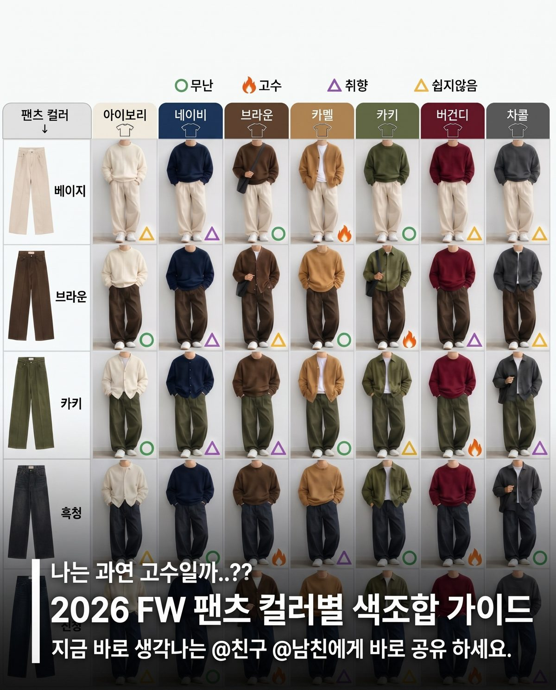

패션 · 인스타그램 · 2026-11-22
2026 FW 팬츠 컬러별 상의 색조합 가이드
베이지·브라운·카키·흑청·진청 팬츠에 어울리는 상의 색을 무난·취향·고수·쉽지않음으로 분류하고, 밝기 조절·여백·색 반복의 세 가지 원칙으로 아쉬운 조합을 보완하는 법을 정리한 남성 가을·겨울 코디 가이드다.

- 팬츠 5색(베이지·브라운·카키·흑청·진청)과 상의 7색(아이보리·네이비·브라운·카멜·카키·버건디·차콜)의 조합을 무난·취향·고수·쉽지않음 네 단계로 평가했다.
- 베이지 팬츠와 브라운 니트는 명도 차이가 자연스럽고 온도감이 비슷해 안정적인 무난 조합이다.
- 카키 팬츠와 네이비 니트는 낮은 명도끼리 만나 무게감이 커지므로 톤을 정돈하면 차분하게 연출되는 취향 조합이다.
- 흑청 팬츠와 버건디 니트는 무채색 바탕에 버건디가 선명한 포인트를 주는 고수 조합이다.
- 밝기 차이 조절: 베이지×아이보리처럼 색이 너무 비슷해 허리 경계가 흐려지면 진한 벨트로 허리선을 잡아준다.
- 어두운 색에 여백 주기: 브라운×차콜처럼 깊은 색이 겹치면 밝은 이너를 목선에 살짝 드러내 무게감을 덜어낸다.
- 한 색을 한 번 더 반복: 진청×카멜처럼 상의와 바지가 따로 보이면 신발·가방에 같은 색을 반복해 연결한다.